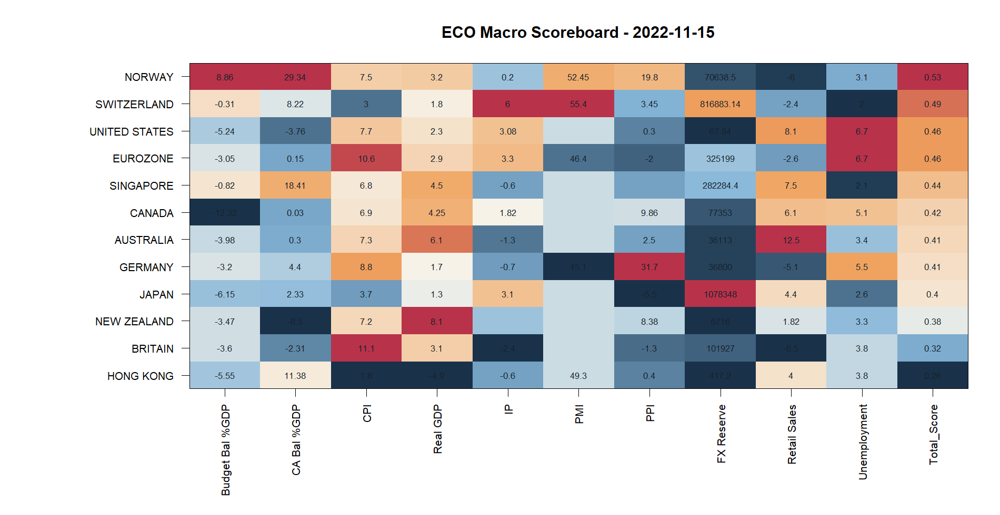
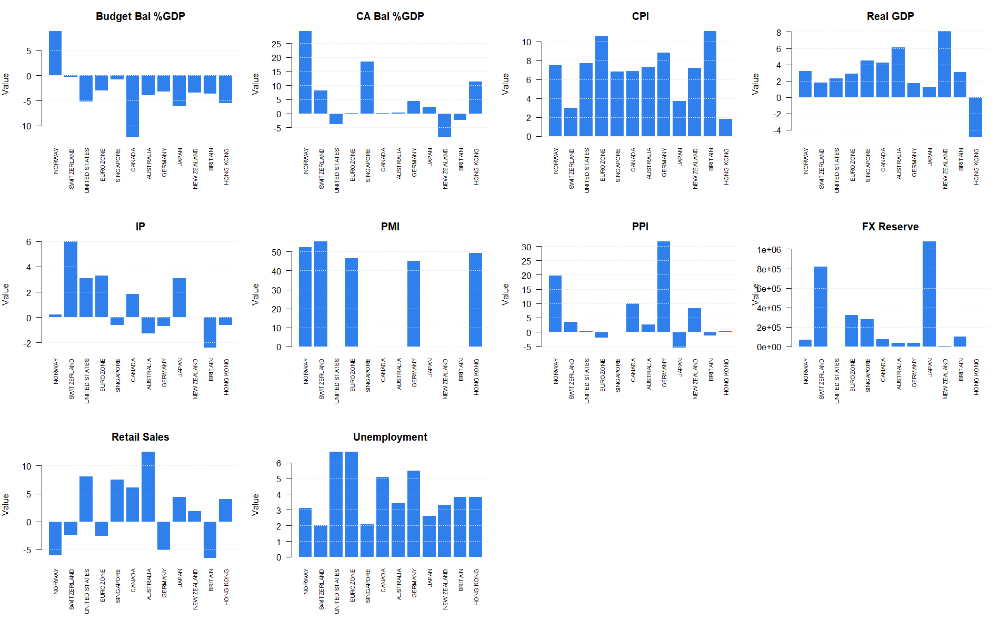
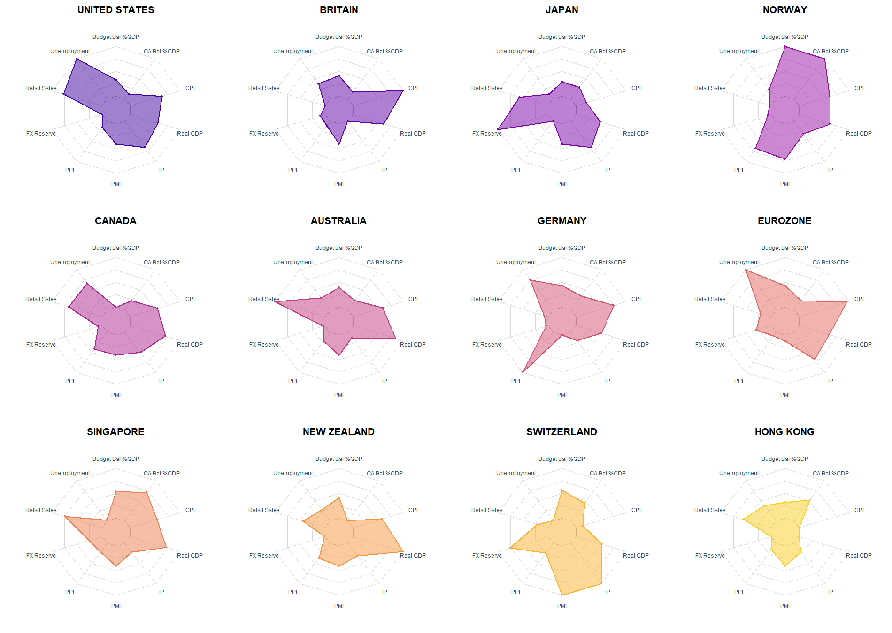

| Country | Budget Bal %GDP | CA Bal %GDP | CPI | Real GDP | IP | PMI | PPI | FX Reserve | Retail Sales | Unemployment | Total_Score |
|---|---|---|---|---|---|---|---|---|---|---|---|
| NORWAY | 8.86 | 29.34 | 7.5 | 3.200 | 0.20 | 52.45 | 19.80 | 70638.500 | -6.00 | 3.1 | 0.5265009 |
| SWITZERLAND | -0.31 | 8.22 | 3.0 | 1.800 | 6.00 | 55.40 | 3.45 | 816883.140 | -2.40 | 2.0 | 0.4867219 |
| UNITED STATES | -5.24 | -3.76 | 7.7 | 2.300 | 3.08 | NA | 0.30 | 67.838 | 8.10 | 6.7 | 0.4632280 |
| EUROZONE | -3.05 | 0.15 | 10.6 | 2.900 | 3.30 | 46.40 | -2.00 | 325199.000 | -2.60 | 6.7 | 0.4618169 |
| SINGAPORE | -0.82 | 18.41 | 6.8 | 4.500 | -0.60 | NA | NA | 282284.400 | 7.50 | 2.1 | 0.4371782 |
| CANADA | -12.32 | 0.03 | 6.9 | 4.248 | 1.82 | NA | 9.86 | 77353.000 | 6.10 | 5.1 | 0.4194960 |
| AUSTRALIA | -3.98 | 0.30 | 7.3 | 6.100 | -1.30 | NA | 2.50 | 36113.000 | 12.50 | 3.4 | 0.4148951 |
| GERMANY | -3.20 | 4.40 | 8.8 | 1.700 | -0.70 | 45.10 | 31.70 | 36800.000 | -5.10 | 5.5 | 0.4086696 |
| JAPAN | -6.15 | 2.33 | 3.7 | 1.300 | 3.10 | NA | -5.50 | 1078348.000 | 4.40 | 2.6 | 0.4022614 |
| NEW ZEALAND | -3.47 | -8.50 | 7.2 | 8.100 | NA | NA | 8.38 | 6716.000 | 1.82 | 3.3 | 0.3809557 |
| BRITAIN | -3.60 | -2.31 | 11.1 | 3.100 | -2.40 | NA | -1.30 | 101927.000 | -6.50 | 3.8 | 0.3188791 |
| HONG KONG | -5.55 | 11.38 | 1.8 | -4.900 | -0.60 | 49.30 | 0.40 | 417.200 | 4.00 | 3.8 | 0.2561600 |